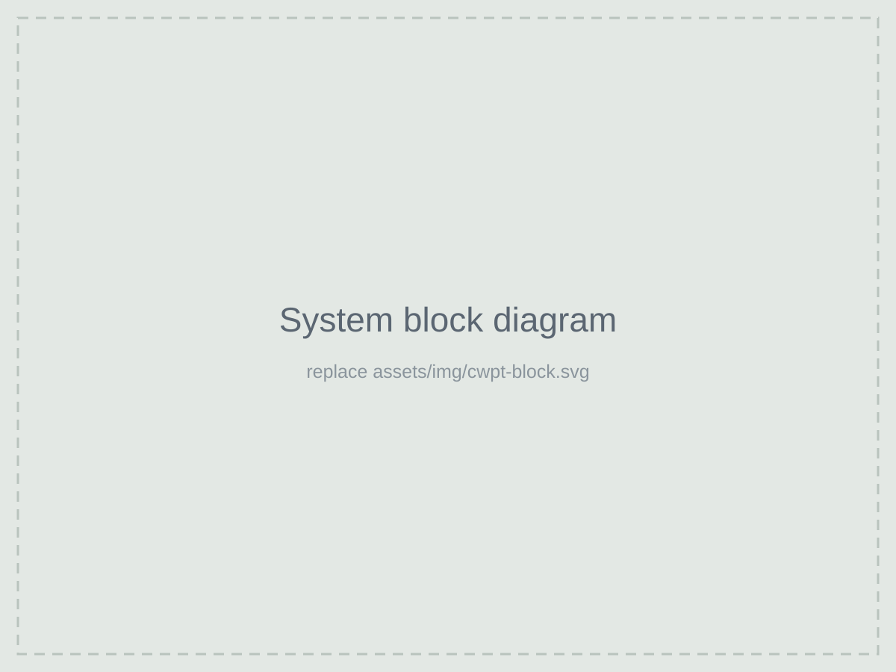
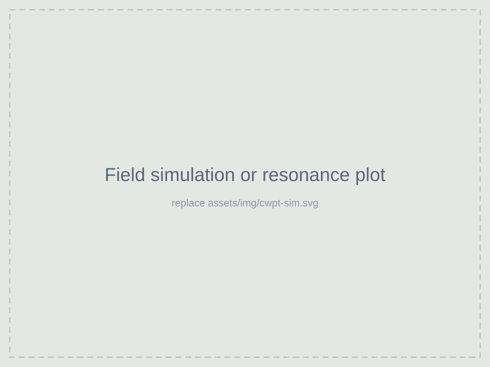

The problem
Plugging a connector in on the Moon is hard: dust gets everywhere and wears out contacts. Capacitive wireless power transfer sends energy across a gap between metal plates instead, so there's nothing exposed to wear. The catch is that the coupling between the plates changes with gap and alignment, and that shifts the resonant frequency the whole system depends on.
What I looked at
- How the coupler plate geometry sets the coupling capacitance and how sensitive it is to misalignment.
- Resonant compensation networks that make the small plate capacitance usable at a practical frequency.
- Frequency tracking to stay on resonance as the rover parks in a slightly different spot each time.

